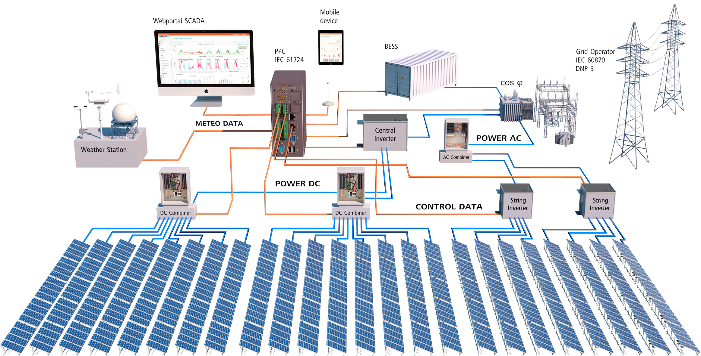

📝 Journal Papers
■ Ghaedi, P., Eskandari, A., Nedaei, A., Habibi, M., Parvin, P. & Aghaei, M. (2024).
Ensemble LVQ Model for Photovoltaic Line-to-Line Fault Diagnosis Using K-Means Clustering and AdaGrad.
Energies, 17(21), 5269.
🔗 DOI
■ Ghaedi, P., Eskandari, A., Nedaei, A., Hatami, F., Parvin, P. & Aghaei, M. (2025).
Logically Optimized and Probabilistic Integrated Photovoltaic Fault Finding Package based on Machine Learning.
Frontiers in Energy Research, Volume 13
🔗 DOI
■ Mamershafai, R., Ghaedi, P., Moradi Sizkouhi, A., Talebi, S., Houshyar, N., Hatami, F., Parviz, P. & Aghaei, M.
Autonomous Visual Fault Detection in Photovoltaic Modules via Stable Diffusion-Generated Data and Optimized Deep Learning Models (under review – to Results in Engineering journal).
🔗 SSRN
■ Ghaedi, P., Eskandari, A., Nedaei, A. & Aghaei, M.
Sequential Fault Detection and Resistance Estimation in PV Arrays Using Deep Q-Network and Bayesian Neural Networks (In preparation).
🔗 Additional Explanation
🎤 Conference Papers
■ Nedaei, A., Eskandari, A., Salehpour, S., Ghaedi, P., Shafie-khah, M. & Aghaei, M (2025).
AI in Smart Grids for Enhanced Renewable Energy Management: Part 1 – Techniques and Applications. International Conference on Future Energy Solutions
(FES), pp. 1-6, IEEE. Cluj-Napoca, Romania.
🔗 DOI
■ Nedaei, A., Eskandari, A., Salehpour, S., Ghaedi, P., Shafie-khah, M. & Aghaei, M (2025).
AI in Smart Grids for Enhanced Renewable Energy Management: Part 2 – Challenges and Future Directions. International Conference on Future Energy Solutions
(FES), pp. 1-6, IEEE. Cluj-Napoca, Romania.
🔗 DOI